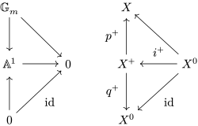
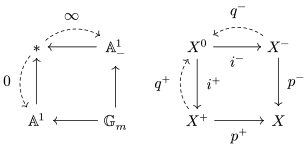

定义
对于带 $\mathbb G_m$-作用的概形 (或类似几何对象) $X$, 定义其吸引子 (attractor) $X^+$ 为 $\mathbb G_m$-等变映射的空间
$$
X^+ = \operatorname{Map}^{\mathbb G_m}(\mathbb A^1,X) = \operatorname{Map}_{\mathbf{B}\mathbb G_m}(\mathbb A^1 / \mathbb G_m, X/\mathbb G_m).
$$
另见 $\mathbb A^1 / \mathbb G_m$.
考虑另一个仿射直线 $\mathbb A^1_- := \mathbb P^1\setminus \{0\} = \operatorname{Spec}\mathbb{Z}[x^{-1}]$, 定义 $X$ 的排斥子 (repeller) 为
$$
X^- = \operatorname{Map}^{\mathbb G_m}(\mathbb A^1_-,X).
$$
排斥子等同于 $\mathbb G_m$ 逆作用的吸引子.
推广: 交换半群
更一般地, 对 Abel 群 $M$ 与子半群 $N\subset M$, 有 $\operatorname{Spec}\mathbb{Z}[M]$ 在 $\operatorname{Spec}\mathbb{Z}[N]$ 上的作用; 对于带 $\operatorname{Spec}\mathbb{Z}[M]$-作用的几何对象 $X$ (参见分次代数), 其 $N$-吸引子可定义为
$$
X^N = \operatorname{Map}^{\operatorname{Spec}\mathbb{Z}[M]}(\operatorname{Spec}\mathbb{Z}[N],X).
$$
例. 当 $M = \mathbb{Z}$, $N = \mathbb{Z}_{\geq 0}$ 时, $X^N$ 是前面定义的吸引子 $X^+$; $M = \mathbb{Z}$, $N = \mathbb{Z}_{\leq 0}$ 时, $X^N$ 是前面定义的排斥子 $X^-$.
例. 当 $N = 0$ 时, $X^N = X^0$ 是 $X$ 上 $\operatorname{Spec}\mathbb{Z}[M]$-作用的不动点.
性质
吸引子 $X^+$ 带有幺半群 $\mathbb A^1$ 的作用, 以及到原空间 $X$ 的映射 $X^+\to X$.


不同子半群的关系
设 $N, L$ 同为 Abel 群 $M$ 的子半群, 则对于带 $\operatorname{Spec}\mathbb{Z}[M]$-作用的仿射概形 $X$,
$$
X^{N\cap L} = X^N \cap X^L.
$$
例如 $X^0 = X^+ \cap X^-$.
注意这对一般几何对象不成立. 例如
$$
X^+\times_X X^- = \operatorname{Map}^{\mathbb G_m}(\mathbb P^1,X),
$$
而 $\mathbb G_m$-等变映射 $\mathbb P^1 \to X$ 未必为常值. 但是一般而言有如下命题 (参见 Drinfeld 1.6.2).
命题. 自然映射
$$
X^{0} \to X^+ \times_X X^-
$$
为既开又闭的嵌入.
例
仿射情形
设 $X = \operatorname{Spec} A$, $A$ 为 $\mathbb{Z}$-分次环 (见滤与分次的叠观点). 那么
$$
X^+ = \operatorname{Spec}A^+
$$
$A^+$ 是 $A$ 的极大 $\mathbb{Z}_{\geq 0}$-分次商, 也即 $A$ 关于所有负次数元素的商.
证明.
对任意环 $B$, $\operatorname{Spec}B$ 到 $X^+$ 的映射等同于 $\mathbb G_m$-等变映射 $\operatorname{Spec}B \times\mathbb A^1\to X$, 也即分次环的态射 $A\to B[x]$. 这个态射唯一地穿过 $A^+$. $\square$
例. $\mathbb G_m$ 作用于 $\mathbb A^n$, 吸引子为整个 $\mathbb A^n$.
例. 考虑 $X=\mathbb A^2_{\tau_1,\tau_2}\to \mathbb A^1_t$, $(\tau_1,\tau_2)\mapsto \tau_1\tau_2$. 那么当 $t\neq 0$ 时 $X_t$ 是双曲线 $\tau_1\tau_2 = t$. 当 $t=0$ 时, $X_0$ 是两条直线. 考虑 $\mathbb G_m$ 在 $X$ 上的作用, $\lambda (\tau_1,\tau_2) = (\lambda\tau_1,\lambda^{-1}\tau_2)$. 该作用与 $X\to \mathbb A^1$ 相容; 从而 $\mathbb G_m$ 作用在每个纤维 $X_t$ 上. 此时 $X_0$ 分解为 $X_0^+ \cup X_0^-$, 其中吸引子 $X_0^+ = \{\tau_2 = 0\}$, 排斥子 $X_0^- = \{\tau_1 = 0\}$.

射影直线
设 $X = \mathbb P^1$, 带有 $\mathbb G_m$ 的通常作用. 那么
$$
X^+ = \mathbb A^1 \sqcup \{\infty\}.
$$
抛物子群
设 $G$ 为约化群, $\lambda\colon \mathbb G_m \to G$ 为余特征, 那么 $\mathbb G_m$ 在 $G$ 上的共轭作用的吸引子恰为 $\lambda$ 对应的抛物子群 $P\subset G$.